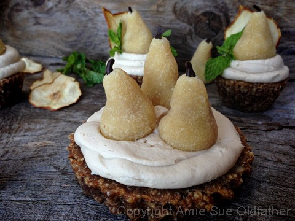
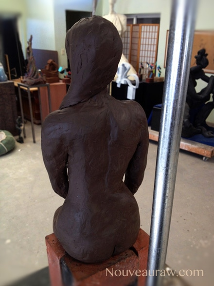

Hazelnut Pear Cake with Velvety Honey Pear Frosting
~ raw, gluten-free ~
One thing that I envy about the “cooked” pastry world is all the neat things that they can sculpt and create. Most of those adorable decorations are made from a product called fondant which is made by boiling sugar and water then adding cream of tartar for stability. Once the mixture has been cooked and cooled slightly, it is very pliable and can be kneaded, rolled, and molded into all kinds of shapes.
I have no desire ever to make or use fondant but fiddle-faddle (!), they can really make some creative decorations with it. So when it comes to decorating raw sweet treats, my mind is always racing to find new ways to make creative, artful pieces that are adorable, healthy, and taste good.
I now realize that whenever I see those cakes and desserts that are covered in fondant… I no longer look at them as food. Instead, I just admire them as a piece of art. No different from when I look at a painting in a museum.
Once I made that separation, I can now look at them for inspiration rather than with envy. I have accepted that if I want to really sculpt something, I will turn to clay and hunker down in my art studio. But that doesn’t mean I won’t stop trying to create masterpieces in the kitchen. :) I just have to get creative with the raw ingredients that are available to me.
So here I gave it an attempt with these little pears. At least I hope they resemble pears. Hehe, I made a raw marzipan dough which works pretty good for creating shapes that will hold up. The key is to make sure that the almond flour is as fine as possible or it will be lumpy. In order to get the white/cream color, you will need to remove the skins from the almonds. That may sound time-consuming if you haven’t done it before, but it goes rather quickly once you start.
Bob was actually my inspiration for this dessert. He told me that I should make a pear frosting. So, I made a pear frosting… now what? lol, I then created the cake batter, then I got the idea for the marzipan pears. I sort of worked backward on this one. For us ladies, it is kind of like buying a pair of shoes first and then finding the outfit to match. :)
I snuck in a special spice/herb that is dear to my heart digestion. While doing research about digestion I learned about the benefits of anise. So I felt it was a fine time to use it in a recipe. I had a problem remembering how to pronounce the name of this spice. I can count on both hands the times I asked someone if they like…. (ooh please don’t make me say it, you know what I was calling instead don’t you? lol) anus… yes! I know!!!! I know!! But for those of you who know me well, I have embarrassed myself with words many many times.
Like the time I wanted to purchase an anemone for my dad’s saltwater aquarium…. except when I went to the fish store and told the salesperson that I needed an enema for my dad’s fish tank. (sinks head in hands). Oy-vey. But let’s get back to anise before I start blushing… It is known to treat a variety of gastrointestinal disturbances. Symptoms such as indigestion, heartburn, and bloating may be relieved by drinking a tea made with this herb. Nausea and excess flatulence may also be treated with anise. Instead of drinking tea, some people may prefer to sprinkle a few anise seeds over a salad or other dish to aid in the digestive process. For this recipe, I took the whole anise flower and ground it to a powder. It is always best to grind spices from their whole natural form if possible. If you can’t, ground anise will be just fine.
 Ingredients:
Ingredients:
Cake: 3 cups = 1 tart cake took 3/4 cup batter and holds 3 pears or you can make 7 cupcakes with 1/4 cup batter each
- 1 1/2 cups raw hazelnuts, soaked & dehydrated
- 1 1/2 cups dried shredded unsweetened coconut
- 1 tsp ground Ceylon cinnamon
- 1 tsp ground ginger
- 1/2 tsp ground anise
- 1/4 tsp Himalayan pink salt
- 2 cups Medjool dates, pitted
- 1 tsp pure vanilla extract
- 1 1/4 cups small diced organic pears
Hazelnut pears: yields 20 pears
- 1 ½ cups raw almonds, soaked
- 1/4 cup raw honey
- 1 tsp almond extract
- Pinch Himalayan pink salt
- 20 raw hazelnuts
- 1 Tbsp hardening chocolate or whole cloves
- Fresh mint for leaves
Frosting:
Preparation:
Cake :
- Note on dates: If the dates are dry and hard, rehydrate them in enough warm water to cover them. Soak while you prepare the remaining cake ingredients. Once ready to add, discard the soak water and hand-squeeze the excess water from them.
- Hazelnuts: In the food processor, fitted with the “S” blade, process the hazelnuts to as fine of a powder as possible without turning it into butter. Once done, place in a medium-sized bowl.
- Coconut flakes: Do the same process with the shredded coconut. If you have a “dry grain” canister that comes with the high-powered blenders, use that to get it nice and fine. That is what I did.
- In a medium-sized bowl, combine and mix the hazelnut flour, coconut flour, cinnamon, ginger, anise, and salt together.
- In the food processor, fitted with the “S” blade, process the dates and vanilla together. Process until it changes to a caramel color. Add to dry ingredients and mix everything together with your hands.
- Add the diced pears and mix. Be careful that you don’t mash the pears up. You want nice, fresh chunks in the batter.
- To make mini tarts: Press 3/4 cup of batter into the tart pan, leveling it off on top.
- To make cupcakes: Place the silicone liners in a muffin pan so that the pan sides support the liner as you press the batter into them. I find paper liners difficult to use when making raw cupcakes since the batter isn’t liquid. Press 1/4 cup of batter into the silicone cupcake liners and level off the top.
- You can dehydrate these or not. If you do dry them, do it just long enough to create a firmer exterior, so they stay moist on the inside. To do this, set the dehydrator at 145 degrees (F) for 1 hour. Then check them, if you want them to dry longer, turn the temp down to 115 degrees (F) and continue drying for a few hours.
- Because of the fresh pears being used in the cakes, the shelf life is about 3 days, give or take.
Hazelnut pears:
- Soak the almonds for 8 hours, remove the skins and pat dry with a paper towel.
- Place the almonds in a food processor, fitted with the “S” blade, and process until it almost turns into a paste.
- Add honey, extract, and salt. Process until well mixed and loose paste forms. Be careful that the almonds don’t get over-processed and release too much of their oils.
- For the stems, pipe small lines of hardening chocolate onto wax paper. They will be done by the time you are down forming the pears.
- Divide the dough into 20 equal pieces (2 tsp volume each).
- Knead each piece to soften, rolling it into a ball and then flatten. Place a hazelnut in the center. Create the pear shape using your fingers to mold it into a pear shape. Remember, there are not two pears alike in nature, so don’t get hung up on them having to all be the same.
- After all the pears are formed, gently remove a chocolate stem from the wax paper and poke it into the pear form. Be gentle. You can also use a whole clove as the stem if you don’t want to mess with the chocolate.
- Place in the fridge in a sealed container. These pears should last 5-7 days in the fridge. You can also store them in the freezer.
Assembly:
- Pipe the frosting on the cakes. I used a 1/2” round hole piping tip.
- Position the pears on top and tuck some mint leaves around the sides. I also used some dried pear slices in the decoration. That is optional but if you want to use them, keep that in mind if you need time to dehydrate them.

Since I was talking about sculpturing up above, I thought I would share with you
my first sculpture that I ever made. Bob and I took a three-day work shop with
a dear friend of our who is an amazing artist, Curt Brill.

© AmieSue.com